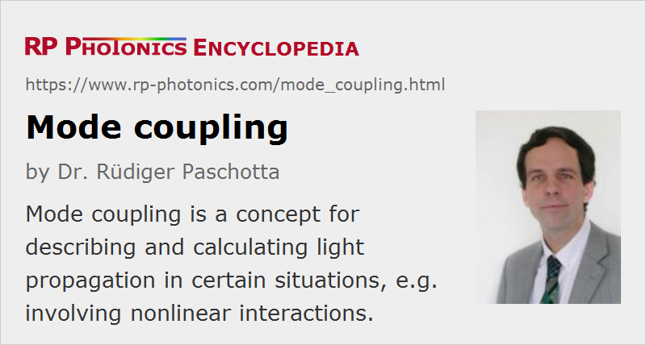

Mode Coupling
Definition: a concept for describing and calculating light propagation in certain situations, e.g. involving nonlinear interactions
German: Modenkopplung, Kopplung zwischen Moden
Categories: fiber optics and waveguides, methods
How to cite the article; suggest additional literature
Author: Dr. Rüdiger Paschotta
The concept of mode coupling is very often used e.g. to describe the propagation of light in some waveguides or optical cavities under the influence of additional effects, such as external disturbances or nonlinear interactions. The basic idea of coupled-mode theory is to decompose all propagating light into the known modes of the undisturbed device, and then to calculate how these modes are coupled with each other by some additional influence. This approach is often technically and conceptually much more convenient than, e.g., recalculating the propagation modes for the actual situation in which light propagates in the device.
Some examples of mode coupling are discussed in the following:
- An optical fiber may have several propagation modes, to be calculated for the fiber being kept straight. If the fiber is strongly bent, this can introduce coupling e.g. from the fundamental mode to higher-order propagation modes (even to cladding modes), or coupling between different polarization states. Bend losses can be understood as coupling to non-guided (and thus lossy) modes. Fiber Bragg gratings (FBGs) can be understood is fibers which are equipped with additional means for mode coupling – for example, for reflecting light (with short period gratings) or for coupling to modes (guided modes or cladding modes) propagating in the same direction (with long period gratings).
- Nonlinear interactions in a waveguide can also couple the modes (as calculated for low light intensities) to each other. This picture can serve e.g. to describe processes such as frequency doubling in a waveguide, where the nonlinear coupling mechanism transfers amplitude (and optical power) from the pumped mode into a mode with twice the optical frequency.
- In high-power fiber amplifiers, a mechanism has been identified which can couple power from the fundamental fiber mode into higher-order modes [12]. This mechanism can involve either a Kramers–Kronig effect or thermal distortions influencing the refractive index profile. This leads to a strong loss of beam quality above a certain pump power level.
- Optical resonators (cavities) can exhibit various kinds of mode coupling phenomena. For example, optical aberrations of the thermal lens in the gain medium of a solid-state bulk laser couple the modes of the laser resonator, as calculated without these aberrations. In this situation, however, not all involved modes are necessarily resonant at the same time. This means then that the amplitude contribution which is fed e.g. from a fundamental (Gaussian) mode into a particular higher-order resonator mode in each resonator round trip will have a different phase each time. This nonresonant nature of the coupling means that the coupling will in general have a small effect – which is essential for laser operation with high beam quality, since otherwise aberrations would strongly excite higher-order modes, having a higher beam parameter product. Strong resonant coupling can occur in certain situations, involving frequency degeneracies of resonator modes. See Ref. [9] for more details.
Technically, the mode coupling approach is often used in the form of coupled differential equations for the complex excitation amplitudes of all the involved modes. These equations contain coupling coefficients, which are usually calculated from overlap integrals, involving the two mode functions and the disturbance causing the coupling. Typically, the applied procedure is first to calculate the mode amplitudes for the given light input, then to propagate these amplitudes based on the above-mentioned coupled differential equations (e.g. using some Runge–Kutta algorithm), and finally (if required) to recombine the mode fields to obtain the resulting field distribution.
Instead of using coupled-mode theory, which is based on simplifying assumptions (which are not always well fulfilled), one can also study mode coupling phenomena with numerical beam propagation. This method is computationally more intense, but can generate more detailed insight. As an example, Figure 1 shows how the optical powers of several guided modes evolve in a long-period fiber Bragg grating. The field evolution has been calculated with numerical beam propagation, and the local mode powers have been obtained from the results using overlap integrals with the mode functions as obtained from a mode solver applied to the bare fiber.
An important physical aspect of such coherent mode coupling phenomena is that the optical power transferred between two modes depends on the amplitudes which are already in both modes. A consequence of that is that the power transfer from a mode A to another mode B can be kept very small simply by strongly attenuating mode B. In this way, mode B is prevented from acquiring sufficient power to extract power from mode A efficiently, so that mode A experiences only little loss, despite the coupling.
For some cases with statistical variations of coupling effects, one may use a coupled-power theory instead of standard theories based on amplitude coupling [11].
Questions and Comments from Users
Here you can submit questions and comments. As far as they get accepted by the author, they will appear above this paragraph together with the author’s answer. The author will decide on acceptance based on certain criteria. Essentially, the issue must be of sufficiently broad interest.
Please do not enter personal data here; we would otherwise delete it soon. (See also our privacy declaration.) If you wish to receive personal feedback or consultancy from the author, please contact him e.g. via e-mail.
By submitting the information, you give your consent to the potential publication of your inputs on our website according to our rules. (If you later retract your consent, we will delete those inputs.) As your inputs are first reviewed by the author, they may be published with some delay.
Bibliography
| [1] | A. W. Snyder, “Coupled-mode theory for optical fibers”, J. Opt. Soc. Am. 62 (11), 1267 (1972), doi:10.1364/JOSA.62.001267 |
| [2] | H. Kogelnik and C. V. Shank, “Coupled-wave theory of distributed feedback lasers”, J. Appl. Phys. 43 (5), 2327 (1972), doi:10.1063/1.1661499 |
| [3] | A. Yariv, “Coupled-mode theory for guided-wave optics”, IEEE J. Quantum Electron. 9 (9), 919 (1973), doi:10.1109/JQE.1973.1077767 |
| [4] | H. Haus et al., “Coupled-mode theory of optical waveguides”, J. Lightwave Technol. 5 (1), 16 (1987) |
| [5] | W. P. Huang et al., “Optical wavelength filter with tapered couplers”, IEEE Photon. Technol. Lett. 3 (9), 812 (1991), doi:10.1109/68.84501 |
| [6] | R. Paschotta et al., “Nonlinear mode coupling in doubly-resonant frequency doublers”, Appl. Phys. B 58, 117 (1994), doi:10.1007/BF01082345 |
| [7] | W.-P. Huang, “Coupled-mode theory for coupled optical waveguides: an overview”, J. Opt. Soc. Am. A 11 (3), 963 (1994), doi:10.1364/JOSAA.11.000963 |
| [8] | N. Matuschek et al., “Exact coupled-mode theories for multilayer interference coatings with arbitrarily strong index modulations”, IEEE J. Quantum Electron. 33 (3), 295 (1997), doi:10.1109/3.555995 |
| [9] | R. Paschotta, “Beam quality deterioration of lasers caused by intracavity beam distortions”, Opt. Express 14 (13), 6069 (2006), doi:10.1364/OE.14.006069 |
| [10] | M. B. Shemirani et al., “Principle modes in graded-index multimode fiber in presence of spatial- and polarization-mode coupling”, J. Lightwave Technol. 27 (10), 1248 (2009), doi:10.1109/JLT.2008.2005066 |
| [11] | M. Koshiba et al., “Multi-core fiber design and analysis: Coupled-mode theory and coupled-power theory”, Opt. Express 19 (26), B102 (2001), doi:10.1364/OE.19.00B102 |
| [12] | A. V. Smith and J. J. Smith, “Mode instability in high power fiber amplifiers”, Opt. Express 19 (11), 10180 (2011), doi:10.1364/OE.19.010180 |
| [13] | A. W. Snyder and J. D. Love, Optical Waveguide Theory, Chapman and Hall, London (1983) |
See also: modes, fibers, multi-core fibers, waveguides
and other articles in the categories fiber optics and waveguides, methods
|  |
If you like this page, please share the link with your friends and colleagues, e.g. via social media:
These sharing buttons are implemented in a privacy-friendly way!